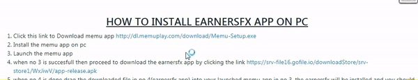
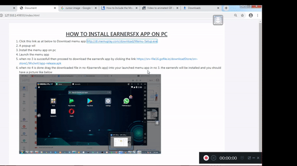
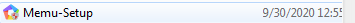
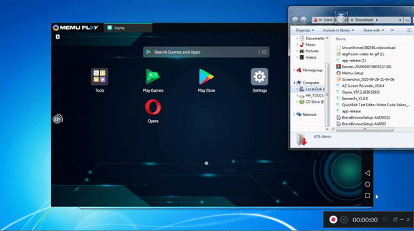
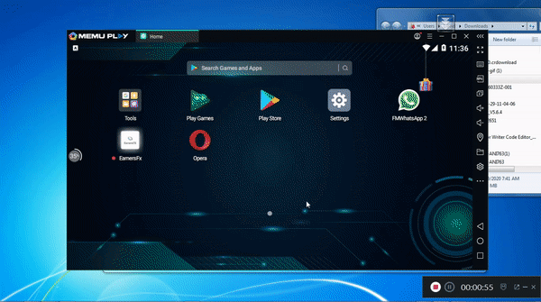

HOW TO INSTALL EARNERSFX APP ON PC
- Click this link as at below to Download memu app http://dl.memuplay.com/download/Memu-Setup.exe
- Your download will start as in the illustration below. Notice the app download starting at the bottom
- After download you should have an icon as below
- Double click the icon in no 3 to install, a pop up menu will be displayed to ask if you want to install, after which your installation wizard will start, click install and follow the process
- After installation go to your start menu, Launch the memu app as below
- After succesful launch you should have a image as bellow
- when no 6 is succesfull then proceed to download the earnersfx app by clicking the link https://srv-file16.gofile.io/downloadStore/srv-store1/WxJiwV/app-release.apk
- when no 7 is done drag the downloaded file (earnersfx app) into your launched memu app. this will install the app
- Then click the app the launch






Note that your pc must be connected to the internet in other to carry out this processes and also depending on your pc's spec, the time for process varies